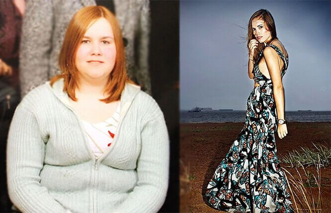
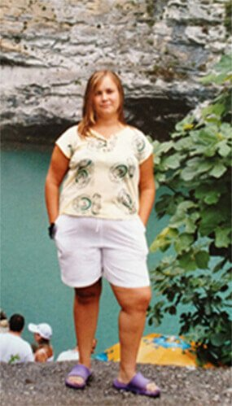
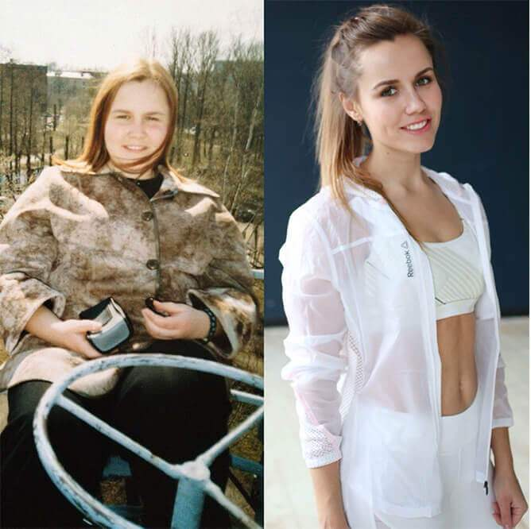
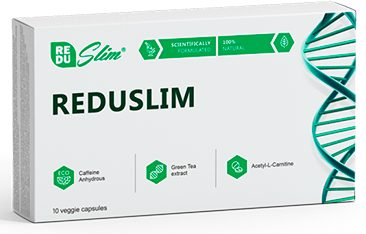
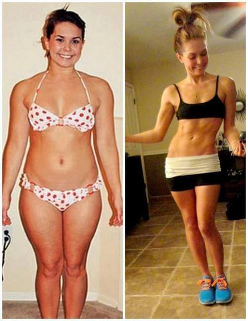
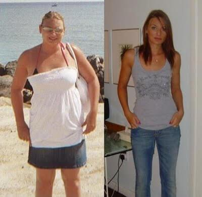
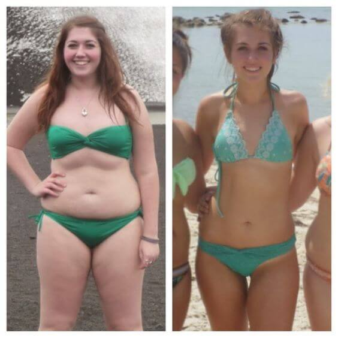
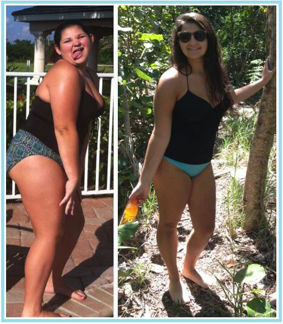
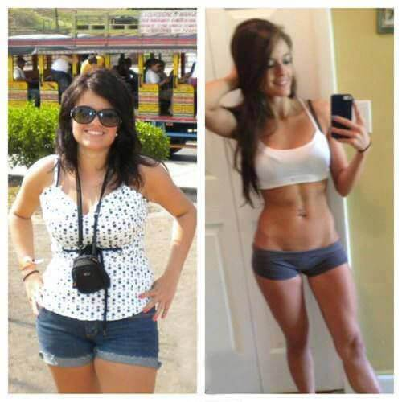
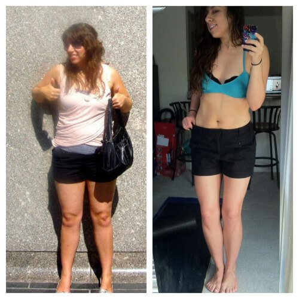

Schudłam sama, chcę pomoc i Tobie
Cześć! Wybaczcie mi, że ostatnim czasem nie odpowiadałam na wasze wiadomości, nie miałam czasu odpowiedzieć na wszystkie wasze pytania. Ale zauważyłam, że wszystkie pytania dotyczą tego samego problemu - jak schudnąć raz na zawsze. I oczywiście bez szkody dla zdrowia! Zdecydowałam się więc odpowiedzieć na wszystkie posty i opowiedzieć, w jaki sposób udało mi się już schudnąć o 24 kg.
Te zdjęcia są zrobione DOKŁADNIE po miesiącu. NIESAMOWITE, co?
Nigdy nie byłam chuda, ale ostatnio moje ciało wymknęło się spod kontroli i zaczął się koszmar: podwójny podbródek do samej klatki piersiowej, ogromna talia i cellulit wszędzie - na brzuchu, na nogach, a nawet na rękach. Jak tylko sobie to uświadomiłam, poddałam się i wyrzuciłam wszystkie koszule i koszulki bez rękawów .
Długo płakałam jak małe dziecko i nie mogłam się uspokoić. Późnej oczywiście udało mi się uspokoić, ale mimo to byłam gruba! Zaczęłam próbować wszystkiego naraz, jak prawdopodobnie wszystkie dziewczyny zdesperowane jak ja. Zaczęłam powoli tracić na wadze i uprawiać sport. Wstawałam bardzo wcześnie, jadłam surowe jajka (nigdy nie rób tego!). Nie jadłam smażonego, chodziłam na siłownię, kupowałam różne śmieci żeby schudnąć i jadłam wyłącznie jogurty. Krótko mówiąc - strałam się robić wszytko co mogłam. Myślisz, że jakiś z tych sposobów mi pomógł?
Wręcz odwrotnie! Przytyłam jeszcze o 5 kg w trakcie tych głupich treningów, nie wiem jak mi się to udało. Ważyłam 89 kg! A przecież mam tylko trochę ponad 160 cm! Następnie lekarze wytłumaczyli mi że moje ciało było pod wpływem silnego stresu, zaczęłam więc bardzo szybko dostawać dodatkowe "kilogramy". Moje ciało myślało, że chcę je zniszczyć, a ja naprawdę nie miałabym nic przeciwko temu! Zapomniałam smak chleba, mięsa i lodów. Jadłam tylko jabłka i piłam tylko wodę, ale było to bezskuteczne.
W końcu próbowałam wszystkiego, co mogłam przez kilka miesięcy, ale potem poddałam się i przestałam robić bzdury.
Wstydzę się o tym mówić, ale już myślałam, że mój los to być samotną kobietą, która będzie miała 7 kotów i umrze w samotności. Zupełnie zdesperowana poszłam do McDonalda i w pół godziny zjadłam połowę menu. Potem wymiotowałam w toalecie i płakałam. Gorzej być nie mogło.
I wtedy zdarzył się cud. Nie, nie w toalecie McDonalda, ale kilka tygodni później. Na Youtube obejrzałam filmik amerykańskiej blogerki, która opowiadała, jak pozbyła się rodzinnego przekleństwa i swojego grubego tyłka, z pomocą Reduslim.
Obejrzałem filmik tylko do połowy i natychmiast zamówiłam. Potem szukałam informacji w Google i odkryłam, że wszystkie gwiazdy Hollywood również wykorzystują ten środek do zrzucenia wagi. Wszyscy już wypróbowali, a ja nie wierzyłam już w cuda i wątpiłam że Reduslim pomoże mi.
I niech to diabli wezmą, myliłam się!
Paczkę dostałam w ciągu tygodnia. Czekając, przeczytałam więcej informacji na temat Reduslim aby upewnić się, że zamówiłam właściwy środek. Postępując zgodnie z instrukcjami, brałam po kapsułce dwa razy dziennie, rano i wieczorem.
A teraz uwaga. Lepiej usiądź .
w 4 tygodnie schudłam o 13 kg!
TYSIĄCE kobiet w Europie i Ameryce zrzucają dodatkowe kilogramy z Reduslim. Według oficjalnych statystyk, 96,7% otrzymało niesamowite wyniki: 9-14 KG W 4 TYGODNIE!
WYJĄTKOWY SKŁAD TEGO ŚRODKA JEST BARDZO SKUTECZNY i daje tak niesamowite efekty!
Ja schudłam o 10 cm w talii a brzuchek po prostu zniknął, nie mógłam w to uwierzyć. Skóra i włosy zaczęły wyglądać lepiej, a ciemne plamy na plecach zniknęły.
Zaczęłam wierzyć, że mogę zostać księżniczką, ponieważ lustra i waga nie potrafią kłamać!
W tamtym czasie nie stosowałam żadnej diety, tylko schudłam z pomocą Reduslim.
Piąty tydzień również zakończył się sukcesem: -6 kg.
A co najważniejsze, nic nie robiłam. Po prostu brałam Reduslim jak napisano w ulotce, nigdy nie zapomniałam wziąć kapsułkę. Nawet najbardziej leniwa da radę.
W półtora miesiąca schudłam gdzieś o 18 kg bez większego wysiłku, diety i ćwiczeń fizycznych. Brzuch i ręce, na których był straszliwy cellulit, straciły w obwodzie, a podwójny podbródek zniknął na zawsze. Pisząc o tym, chcę płakać z radości :)
Po całej kuracji w dwa miesiące,schudłam w sumie o 24 kg.Nikt nawet nie podejrzewa, do czego zdolne jest ciało, jeśli mu pomagać. Nie jestem już 20latką, nie jest tak łatwo i szybko schudnąć.
Wielu osób wciąż nie MOŻE uwierzyć, że teraz jestem taka:
Prawie zapomniałam powiedzieć że w 2012 r.Reduslim ZOSTAŁ PRZETESTOWANY W NARODOWEJ AKADEMII NAUK STANÓW ZJEDNOCZONYCH. Wyniki BYŁY WRĘCZ niewiarygodne, ale postanowili nie rozpowszechniać ich
Dlaczego? Ponieważ dla aptek, lekarzy, dietetyków i klinik środek, który ma PRAWDZIWE I SKUTECZNE DZIAŁANIE, nie jest WYGODNY! Jest również niedrogim środkiem...
Teraz polecam Reduslim swoim koleżankam, myślę, że każdy powinien o nim wiedzieć. Miło jest być szczupłym i mieć dużo energii, więc wszyscy powinni wiedzieć, że szczęście jest dostępne dla wszystkich. Jeśli składasz zamówienie, zrób to przez oficjalną stronę internetową producenta.
Starczy już głodować, mordować się na śilowni, nadszedł czas, by być przebiegłym! Teraz już wiesz, co robić.
Nadal marzysz o ZGRABNEJ SYLWETCE? Czas działać! Pozbądź się NADWAGI TERAZ!
Teraz odpowiem na najczęściej zadawane pytania:
Czy nie będzie jakichkolwiek problemów ze skórą? Czy nie jest tak szybkie odchudzenie niebezpieczne?
Nie, Reduslim na to nie pozwoli! Odchudzanie jest szybkie, ale stopniowe, skóra będzie miała czas na dostosowanie się.
A co ze skórą? Ona się skurczy?
Nie! Po prostu wraca do naturalnego wygłądu .Reduslim aktywuje naturalną produkcję kolagenu, co nadaje skórze elastyczność. W ogóle nie będzie problemów ani ze skórą, ani z rozstępami, ani z zapaleniem tkanki łącznej!
Jak lepiej odżywiać się podczas kuracji?
Jestem przeciwna dietom, nie warto znęcać się nad swym ciałem.
To prawda, że nie możesz jeść po 18?
Nie, to jest kłamstwo. Jedz kiedy masz chęć, to wszystko nonsens. Najważniejsze to nie jeść przez 2-4 godziny przed snem! .
Z przyjemnością podzielę się z Wami najnowszymi wiadomościami! ROZMAWIAŁAM z przedstawicielami Reduslim w Polsce i postanowili dać 50% ZNIŻKĘ dla pierwszych 100 odwiedzających MÓJ BLOG, którzy BĘDĄ chcieli zamówić produkt!
ZAMÓW Reduslim Z RABATEM 50%Marzę o tym, by stracić zbędne kilogramy od samego dzieciństwa. Dowiedziałam się o Reduslim kilka miesięcy temu i moja matka mnie popiera. Powiedziała, że nadszedł czas by spróbować czegoś nowego, by być zdrową. Ponadto Reduslim nie jest wcale drogi. Teraz moja mama i ja tracimy tracimy wagę wspólnie, a moja mama traci na wadze nawet szybciej niż ja! Nasze wyniki są po prostu niesamowite.

Cześć Karolina! Probowałam Reduslim i mogę spokojnie powiedzieć, że ten środek uratował moje małżeństwo i moją rodzinę :) Mój mąż znowu patrzy na mnie jak na kobietę i jestem teraz bardzo pewna siebie. Życie stało się łatwiejsze, dzięki :)
 Kamila Gawłowicz
Kamila GawłowiczKochana Karolina, Twój blog i Twoje rady są prawdziwą pomocą. Próbowałam wielu diet i programów treningowych, ale wyniki nigdy nie były takie, jakich się spodziewałam. Ważę 85 kg, a mój wzrost jest 163 cm. Zamówiłam Reduslim jak tylko przeczytałam Twój post. Mam nadzieję, że Reduslim pomoże mi stracić 35 kg. Obiecuję podzielić się z Tobą wynikami.
.Cześć Kamila! Nie jestem jedyną, która straciła na wadze z Reduslim, moi koleżanki też dały radę, więc i Ty to zrobisz. Czekam na wyniki, bardzo ważne jest dla mnie poznanie sukcesów innych osób. Jestem pewna że dasz sobie radę, powodzenia!
Otrzymałam wczoraj paczkę. Jestem bardzo szczęśliwa, nie mogę się doczekać pierwszych wyników.
 Magdalena Grabowska
Magdalena GrabowskaCześć Karolina, dziękuję bardzo! Bardzo szybko schudłam i bez wysiłku! To wspaniałe narzędzie, dziękuję za post o tym wszystkim!
Zawsze wiedziałam, że nauka szybko się rozwija i uratuje nas od otyłości :) Jutro po raz pierwszy od wielu lat idę z facetem na randkę. Ostatnio sama byłam jak restauracja, wszędzie tłuszcz i zapach smażonego jedzenia. Dzięki Reduslim schudłam o 23 kg w ciągu miesiąca! Dziękuję Karolina!
 Klaudia Ewald
Klaudia Ewald>Wow Ania! Takie wspaniałe wyniki w ciągu zaledwie miesiąca ?! ?? Myślę, że kolej na mnie - muszę ten środek zamówić! Wczoraj się zważyłam, sytuacja wygląda nie za dobrze
 Karolina Rygoł
Karolina Rygoł>Ja wypróbowałam Reduslim i schudłam o 34,5 kg w 6 tygodni !!! Wciąż nie mogę w to uwierzyć. To istny cud! Karolina, dziękuję bardzo!
Agnieszka RosaGratulacje dla wszystkich, wspaniałe rezultaty! Twoje zdjęcia mnie zaskoczyły i zainspirowały, składam zamówienie!
Cześć Karolina! W końcu zamówiłam Reduslim. Zgodnie z obietnicą, oto moje wyniki! W miesiąc straciłam 32 kg! To jest zwycięstwo!
 Julia Holoczek
Julia HoloczekWow wyniki. Moja przyjaciółka schudła z Reduslim i straciła 19 kg w półtora miesiąca. Nawet jej matka jej nie poznaje!
Dziękuję, to bardzo fajne, kiedy ludzie cię wspierają. Nowe ciało, nowe życie. Do tej pory straciłam tylko 5 kg, ale stale tracę na wadze. Jestem bardzo szczęśliwa.
Trzy moje koleżanki schudły z Reduslim, nawet krewni ich nie poznają, wyglądają teraz jak modelki. Zamówiłam teraz dla siebie, nie chcę być najstraszniejszą z naszej paczki.
Karolina, jak prosiłaś, teraz podzielę się swoimi wynikami. -12 kg w miesiąc!! Bardzo się cieszę, nie możesz nawet sobie wyobrazić, przez co przeszłam kiedy próbowałam schudnąć na inne sposoby
Cześć Agata, cieszę się z Twoich wyników! Powodzenia i nigdy nie zapominaj, że cię wspieram!
 Justyna Kozłowska
Justyna KozłowskaHej Karolina! Przeczytałam Twoją historię i postanowiłam zamówić Reduslim. Miałyśmy spotkanie ze starymi koleżankami z technikum i wcale nie chciałam tam jechać, żeby nie pokazywać tego, kim się stałam w ciągu ostatnich 20 lat, tak jakbym w ogóle nie dbała o swoje zdrowie. Mój wzrost jest 164 cm i ważyłam 91 kg!!!. Nie wiedziałam nawet, jak znaleźć ubranie w sklepach, to było bardzo trudne, myślałam, że tylko koc mi pasuje ... Ale teraz mam rozmiar 44 dzięki Reduslim! Kiedy w końcu się spotkałyśmy byłam królową imprezy :) W ciągu 2 miesięcy schudłam o ponad 30 kg, po prostu nie wiem co powiedzieć, żadnych słów nie starczy. Dziękuję!
 Wyraźne sposoby na schudnięcie w bardzo krótkim czasie.
Wyraźne sposoby na schudnięcie w bardzo krótkim czasie.
Kochana Karolina, dzięki za poradę! Wiele czytam o Reduslim, ale wciąż miałam wątpliwości. Zamówiłam lek dopiero po Twoim poście i skończyłam kurację 3 tygodnie temu. Zrzuciłam 39 kg! Teraz ważę 46 i, jak obiecałam, nie przytyję więcej. Teraz już nie martwię się o moje ciało i o zbędne kilogramy.. DZIĘKUJĘ!
